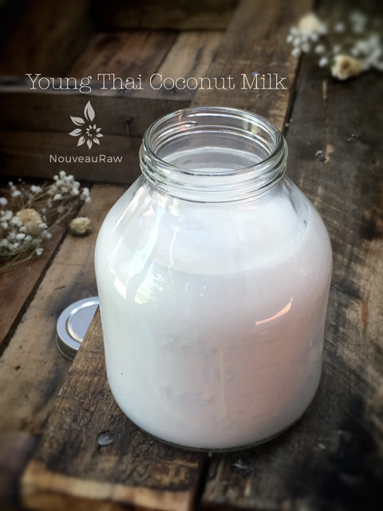
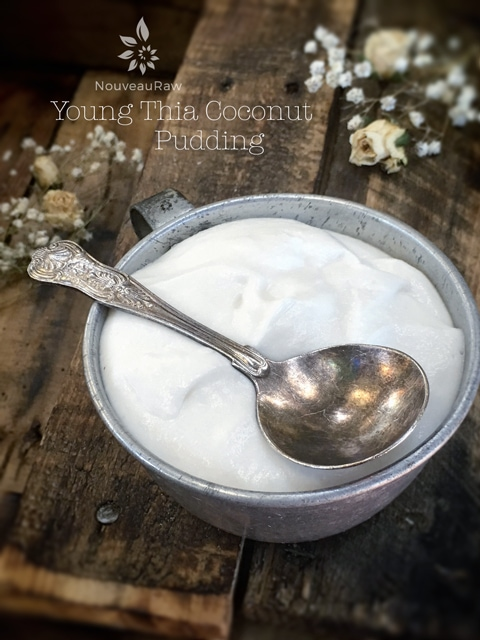
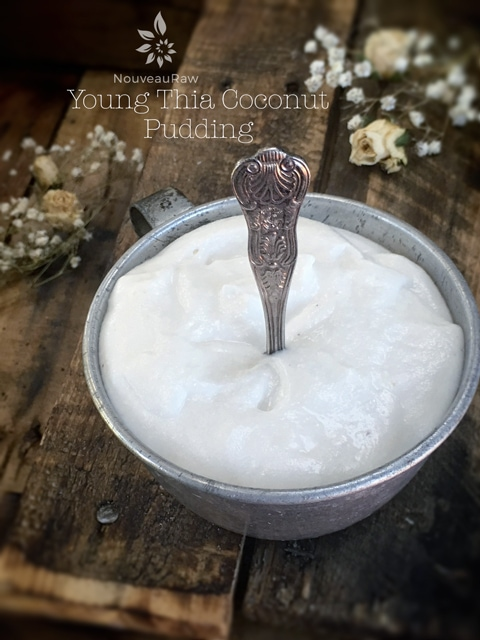
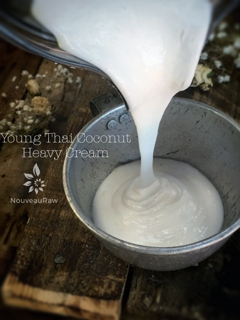
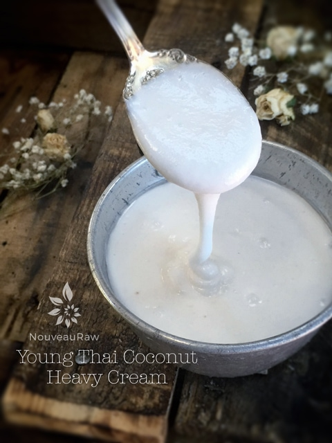
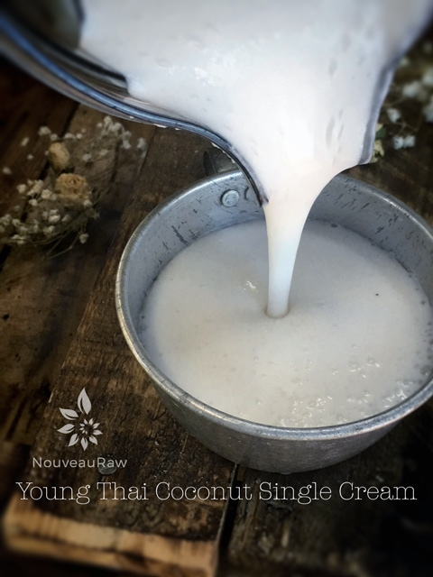
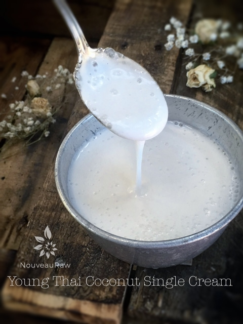
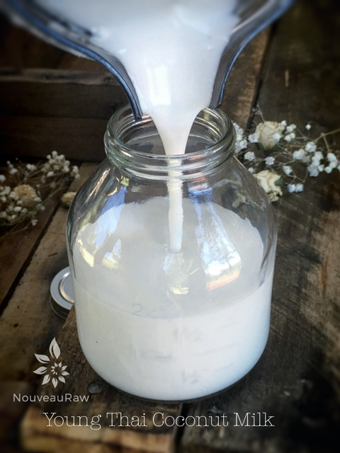
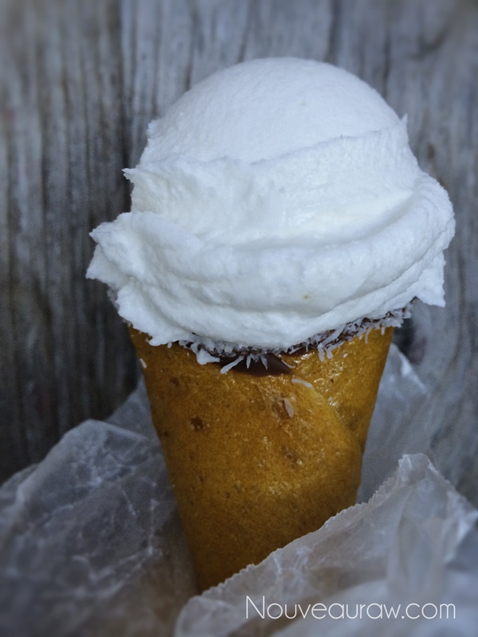

Coconut Pudding, Creams, Milk

~ raw, vegan, gluten-free, nut-free, Paleo ~
The magic of Young Thai Coconuts goes far beyond their health benefits for me. The love affair started back in 2008 when I tried my first one, and since then, I have never grown tired of them. In fact, I have been known to take a straw to my countertop should any of its liquid spill out.
Is it better than canned?
Oh, good golly! YES! The canned versions don’t even come close to what a fresh Young Thai coconut can taste like. But that is often true when comparing fresh to canned anyway.
Let’s get Crackalackin.
For most people, the cracking and processing act isn’t worth all the effort, but to me, it was a ritual, almost a form of meditation. I am a little weird that way. But you have to understand that I never just bought them one at a time, I would purchase cases. So, it wasn’t long before the kitchen would be covered in coconut shells and coconut water dripping from the countertops, occasionally the ceiling. I would separate the water from the meat, proportion them, and then place it in the freezer. It’s the smart way to go about it if you use them often.
But times have changed.
Nowadays, I order my coconut meat through Exotic Superfoods. It is organic, which I never find in the local stores. It comes packaged in 1 pound pouches, which are filled with the purest, most beautiful coconut meat that I have seen. They ship it frozen, so once the box arrives, I slide the pouches into the freezer, and I am set.
Honestly, I won’t go back to cracking coconuts again. It’s not so much the mess that it creates … it’s the guessing game as to what you might find inside. As I held a coconut in my hand the questions would rattle through my head… Will it be good? Is the flesh jelly-like or firm this time? Will it be pink or moldy? Do I need to purchase 1 or 4 to get a cup of meat? If you have experience opening them, you know what I am talking about. I did a test and documented the weight and volume of the water and flesh that I got out of a case of coconuts. I highly recommend that you read it — the Inside Scoop of Young Thai Coconuts.
New to Young Thai Coconuts and wonder just what the heck they are? Well, for starters, they aren’t the mature, brown, hairy ones that you typically find in the grocery stores. They are white with a cone-type top on them. Inside it is filled (usually) with coconut water and soft flesh that can either be very jelly-like or semi-firm. When browsing through the bin of coconut nuts are the store, avoid any that have any cracks, or a bluish/purplish coloring on the bottom of a coconut. That is a sign of mold and/or bacteria.
Oh gosh… the recipe!
I got so carried away chattering up a storm about the coconuts that I temporarily lost sight of sharing the recipe. Hehe In this recipe post, I am sharing how you can make Pudding, Heavy Cream, Half & Half, Single Cream, and Milk …all from a Young Thai Coconut! Let’s jump to it.
The rundown on Ingredients:
As you begin to thin out the blended coconut to reach different consistency, you will see that I use water. This is because I purchase the meat only, as discussed above. If you crack your own and get both the water and meat… use the coconut water in place of the plain water. Adding a sweetener is up to you. If you plan on using it for savory dishes, perhaps hold off on adding it. The salt is added to elevate the natural sweetness in the coconut. And lastly…
Why I add sunflower lecithin.
Sunflower lecithin is made up of essential fatty acids and B vitamins. It helps to support healthy function of the brain, nervous system, and cell membranes. It also lubricates joints; helps break up cholesterol in the body.
Lecithin comes in powder, liquid, soy-based, and sunflower based. My preference is powdered sunflower lecithin. The liquid form is thick, dark and has sticky consistency with a nutty-seedy rich aroma and surprisingly pleasant flavor. Setting aside all the nutritional benefits, it is a natural emulsifier that binds the fats from nuts with water creating a creamy consistency.
Ingredients:
Coconut Pudding: yields 2 cups
- 1 lb Young Thai Coconut meat/flesh
- 1 – 3 Tbsp Sweetener
- 1/8 tsp Himalayan pink salt
Heavy Cream: yields 3 cups
- 1 lb Young Thai Coconut meat/flesh
- 1 cup water
- 1 – 3 Tbsp Sweetener
- 1 Tbsp raw sunflower lecithin, liquid or powder
- 1/8 tsp Himalayan pink salt
Coconut Half & Half: yields 4 cups
- 1 lb Young Thai Coconut meat/flesh
- 2 cups water
- 1 – 3 Tbsp Sweetener
- 1 1/2 Tbsp raw sunflower lecithin, liquid or powder
- 1/8 tsp Himalayan pink salt
Coconut Cream: yields 5 cups
- 1 lb Young Thai Coconut meat/flesh
- 3 cups water
- 1 – 3 Tbsp Sweetener
- 2 Tbsp raw sunflower lecithin, liquid or powder
- 1/8 tsp Himalayan pink salt
Coconut Milk: yields 6 cups
- 1 lb Young Thai Coconut meat/flesh
- 4 cups water
- 1 – 3 Tbsp Sweetener
- 2 Tbsp raw sunflower lecithin, liquid or powder
- 1/8 tsp Himalayan pink salt
Preparation:
Coconut Pudding:
- Place the coconut meat, sweetener, and dash of salt in a high-powered blender.
- Having a Vitamix with a plunger will make this task a cinch. Don’t add any liquid to the coconut meat.
- If using a standard blender, you will need to stop the machine quite often to scrape down the sides.
- Blend until the coconut meat transforms into a thick, creamy pudding!
- For a thicker pudding texture, pour the mixture into a glass container and place in the fridge for a few hours. It will transform into the most fantastic pudding texture.
- Top with fresh fruit, raw honey, nuts, or sprinkle raw granola over the top.
- Enjoy within 3-4 days.
Heavy Cream:
- Place the coconut meat, water, sweetener, lecithin, and salt in a high-powered blender.
- Blend until the coconut meat transforms into a thick, heavy cream!
- Spoon over fresh fruit or raw crepes. Garnish raw soups or use in ice cream bases.
- Store in a glass jar and use within 3-4 days.
Coconut Half & Half:
- Place the coconut meat, water, sweetener, lecithin, and salt in a high-powered blender.
- Blend until the coconut meat transforms into a smooth cream.
- Think “peaches n’ cream” …. add to warm coffees or teas — excellent texture for thick and creamy raw soups.
- Store in a glass jar and use within 3-4 days.
Coconut Single Cream:
- Place the coconut meat, water, sweetener, lecithin, and salt in a high-powered blender.
- Blend until creamy.
- The consistency is in between the Half & Half and Milk. Use with cereal, in smoothies, in raw soups, or enjoy as is.
- Store in a glass jar and use within 3-4 days.
Coconut Milk:
- Place the coconut meat, water, sweetener, lecithin, and salt in a high-powered blender.
- Blend until creamy.
- Great dairy-free milk for cereal, add to smoothies instead of water, or just as a refreshing drink.
- Store in a glass jar and use within 3-4 days.
- Note: you can thin out the milk even further if desired by adding more liquid.

Above – This is what pure blended coconut pudding looks like after blending it. So thick a spoon can stand in it.

Below – Double Heavy Cream – as it pours, it folds on itself.

I am doing my best to capture the thick texture in the photo.


This is the texture of the single cream. It is thinner than that Heavy Cream.

And now we are onto the coconut milk which is roughly the consistency of whole milk. From there, you can keep thinning it to your liking.

Here is a fun photo that I took a year ago. That “ice cream” is just pure blended coconut meat!

© AmieSue.com